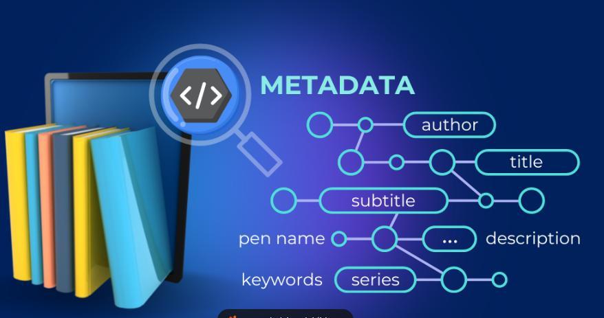

METADATO

Título
EL JUEGO VIRTUAL COMO ESTRATEGIA PEDAGÓGICA PARA FORTALECER LAS HABILIDADES DIGITALES EN ESTUDIANTES DEL GRADO 501 DE LA INSTITUCIÓN EDUCATIVA DEPARTAMENTAL GENERAL SANTANDER DEL MUNICIPIO DE SIBATÉ - CUNDINAMARCA ÁREA DE SISTEMAS
Descripción
Esta propuesta educativa surge de la importancia de incorporar estrategias innovadoras que despierten el interés, la motivación y la participación activa de los estudiantes en los procesos de enseñanza y aprendizaje, aprovechando las posibilidades que ofrecen las tecnologías digitales en el contexto educativo.
En este sentido, el juego virtual se convierte en una herramienta pedagógica que facilita la adquisición de conocimientos, promueve la exploración, estimula la creatividad y favorece el desarrollo de habilidades y competencias necesarias para que los estudiantes aprendan de los entornos digitales.
El OVA propone experiencias de aprendizaje interactivas, dinámicas y significativas que integran actividades lúdicas, juegos educativos, retos digitales, cuestionarios, ejercicios prácticos y recursos multimedia. A través de estas actividades, los estudiantes tendrán la oportunidad de reconocer los componentes del computador, explorar herramientas tecnológicas, utilizar programas y aplicaciones digitales, desarrollar habilidades de búsqueda y selección de información, fortalecer el pensamiento lógico y aprender sobre el uso adecuado, seguro y responsable de los recursos tecnológicos.
De igual manera el OVA busca fomentar el aprendizaje autónomo, el trabajo colaborativo, la resolución de problemas y la participación activa de los estudiantes, respetando sus diferentes ritmos y estilos de aprendizaje mediante la realización de actividades interactivas, los niños podrán poner en práctica sus conocimientos, recibir retroalimentación sobre sus avances y reconocer sus logros durante el proceso formativo.
De esta manera, el OVA pretende transformar el aprendizaje del área de Sistemas en una experiencia educativa motivadora y enriquecedora, en la que el juego virtual no sea solamente un medio de entretenimiento, sino una estrategia pedagógica que contribuya al desarrollo de competencias tecnológicas y digitales, fortaleciendo los aprendizajes de los estudiantes capaces de utilizar la tecnología de manera creativa, crítica y responsable en su vida escolar y cotidiana.
Idioma Español.
Palabras clave: Objeto Virtual de Aprendizaje, juego, pedagógico, habilidades digitales, educación primaria, tecnología, competencias digitales, aprendizaje interactivo, estudiantes.
Autoría Diana Roció Obando Jojoa – Cod. 099250222026
Marinela Villarraga Villarraga Cod. 099250362026
Afiliación institucional Universidad del Tolima- Ibagué
Institución Educativa General Santander, Municipio de Sibaté, Cundinamarca.
Fecha de creación Octubre año 2026
Versión 1.0